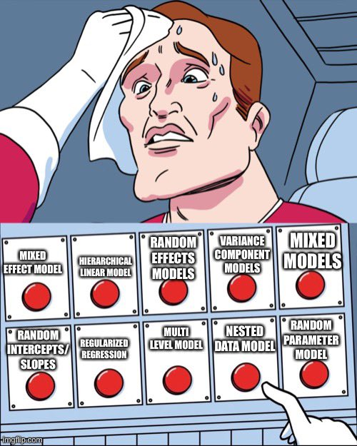
\[{Y}_{i} = b_{0} + b_{1}X_{i} + ... +\epsilon_{i}\]
\[{Y}_{ij} = b_{0} + b_{1}X_{ij} + ... +\epsilon_{ij}\] where i refers to the cluster or group (e.g., a person) and j to the observations within it
group = "PD", and controls, "CTRL"), each scanned 2–4 times: 225 rows in all.CON and SMN7 are resting-state connectivity scores for two brain networks; time is time since the first scan (0–6); week is a finer-grained version of it.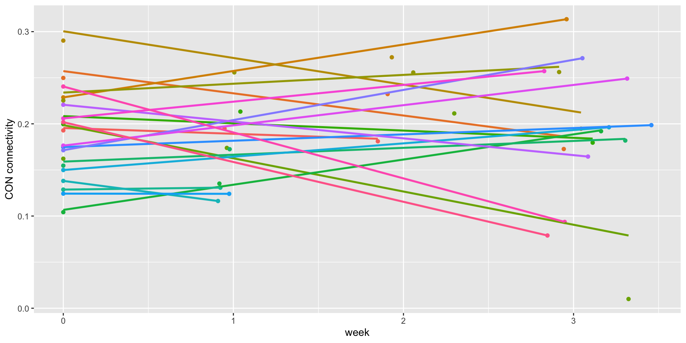
Level 1 \[{Y}_{ij} = \beta_{0i} + \varepsilon_{ij}\]
Level 2 \[{\beta}_{0i} = \gamma_{00} + U_{0i}\]
\[{U}_{0i} \sim N(0, \tau_{00}^{2})\] \[{\varepsilon}_{ij} \sim N(0, \sigma^{2})\]
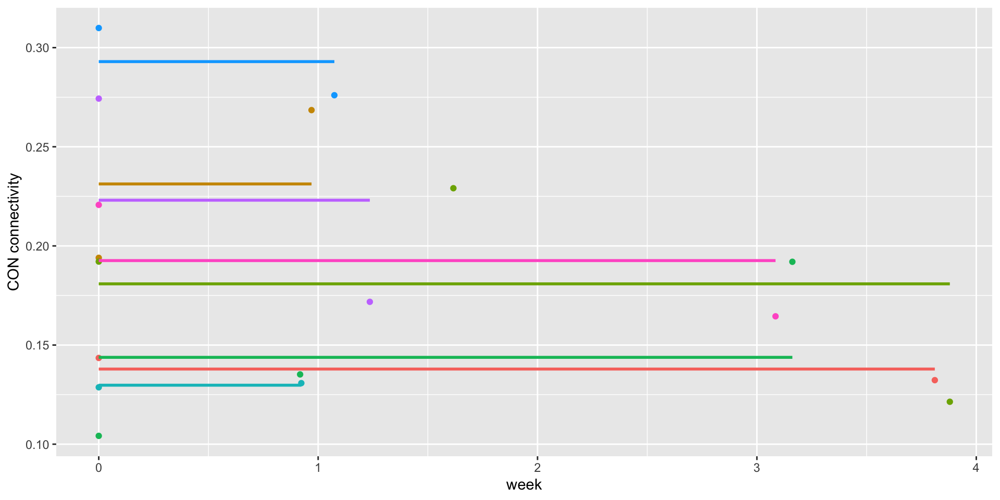
\[{Y}_{ij} = \gamma_{00} + U_{0i} + \varepsilon_{ij}\]
Akin to ANOVA if we treat \(U_{0i}\) as between subjects variance & \(\varepsilon_{ij}\) as within subjects variance.
Level 1: \[{Y}_{ij} = \beta_{0i} + \varepsilon_{ij}\]
Level 2: \[{\beta}_{0i} = \gamma_{00} + U_{0i}\] Combined: \[{Y}_{ij} = \gamma_{00} + U_{0i} + \varepsilon_{ij}\]
\(U_{0i}\) is considered a random effect, as it varies across our grouping
\(\gamma_{00}\) is considered a fixed effect, as it is what is fixed (average) across our grouping
Level 1 is where you have data that repeats within your grouping or clustering data. Is your cluster classrooms? Then students are level 1. Is your cluster people? Then observations are level 1.
\[{Y}_{ij} = \beta_{0i} + \beta_{1i}X_{ij} + \varepsilon_{ij}\] Notice the subscripts on X: these predictors vary across groups (i) and within a group (j). So if your grouping (i) is people, then j refers to different observations.
Level 2 takes the parameters at level 1 and decomposes them into a fixed component ( \(\gamma\) ) that reflects the average and, if desired, the individual deviations around that fixed effect (U).
\[ \begin{aligned} \text{Level 1:}\quad Y_{ij} &= \beta_{0i} + \beta_{1i}X_{ij} + \varepsilon_{ij} \\ \text{Level 2:}\quad \beta_{0i} &= \gamma_{00} + U_{0i} \\ \beta_{1i} &= \gamma_{10} \end{aligned} \]
\[ \begin{aligned} \text{Level 1:}\quad Y_{ij} &= \beta_{0i} + \beta_{1i}X_{ij} + \varepsilon_{ij} \\ \text{Level 2:}\quad \beta_{0i} &= \gamma_{00} + U_{0i} \\ \beta_{1i} &= \gamma_{10} + U_{1i} \\ \text{Combined:}\quad Y_{ij} &= \gamma_{00} + \gamma_{10}X_{ij} + U_{0i} + U_{1i}X_{ij} + \varepsilon_{ij} \end{aligned} \]
Each person’s slope is a fixed part plus their own deviation: for person 16, \(\beta_{1,16} = \gamma_{10} + U_{1,16}\).
The residual structure, where the random effects are again normally distributed with a mean of zero, but this time one must also consider covariance in addition to variance.
\[\begin{pmatrix} {U}_{0i} \\ {U}_{1i} \end{pmatrix} \sim N \left( \begin{pmatrix} 0 \\ 0 \end{pmatrix}, \begin{pmatrix} \tau_{00}^{2} & \tau_{01}\\ \tau_{01} & \tau_{11}^{2} \end{pmatrix} \right)\]
Note that it is possible to have a different error structure for the random effects
\[{\varepsilon}_{ij} \sim N(0, \sigma^{2})\]
Level 1:
\[{Y}_{ij} = \beta_{0i} + \beta_{1i}X_{ij} + \beta_{2i}Z_{ij} + \varepsilon_{ij}\] Level 2:
\[{\beta}_{0i} = \gamma_{00} + U_{0i}\]
\[{\beta}_{1i} = \gamma_{10} + U_{1i}\] \[{\beta}_{2i} = \gamma_{20} + U_{2i}\]
\[ \begin{aligned} \text{Level 1:}\quad Y_{ij} &= \beta_{0i} + \beta_{1i}X_{ij} + \varepsilon_{ij} \\ \text{Level 2:}\quad \beta_{0i} &= \gamma_{00} + \gamma_{01}G_{i} + U_{0i} \\ \beta_{1i} &= \gamma_{10} + U_{1i} \end{aligned} \]
\(G_i\) is a person-level variable (it has no j): it can only predict person-level things, like each person’s intercept.
Combined \[{Y}_{ij} = \gamma_{00} + \gamma_{01}G_{i}+ \gamma_{10} (X_{ij}) + U_{0i} + U_{1i}(X_{ij}) + \varepsilon_{ij}\] \[{Y}_{ij} = [\gamma_{00} + \gamma_{01}G_{i}+ U_{0i}] + [(\gamma_{10} + U_{1i})(X_{ij})] + \varepsilon_{ij}\]
\[ \begin{aligned} \text{Level 1:}\quad Y_{ij} &= \beta_{0i} + \beta_{1i}X_{ij} + \varepsilon_{ij} \\ \text{Level 2:}\quad \beta_{0i} &= \gamma_{00} + \gamma_{01}G_{i} + U_{0i} \\ \beta_{1i} &= \gamma_{10} + \gamma_{11}G_{i} + U_{1i} \\ \text{Combined:}\quad Y_{ij} &= \gamma_{00} + \gamma_{01}G_{i} + \gamma_{10}X_{ij} + \gamma_{11}G_{i}X_{ij} + U_{0i} + U_{1i}X_{ij} + \varepsilon_{ij} \end{aligned} \]
\(\gamma_{11}\), the cross-level interaction: does the person-level variable G predict how strong each person’s X effect is?
\[{Y}_{ij} = [\gamma_{00} + U_{0i} +\gamma_{01}G_{i}] + [(\gamma_{10} + \gamma_{11}G_{i}+ U_{1i})(X_{ij})] + \varepsilon_{ij}\]
As a rule, each level-1 predictor is usually really 2 predictor variables. It is important to separate within-group from between group variance. Failing to do so will “smush” between and within variance to level 1.
Example: student SES at level 1, with schools at level 2. Some kids have more money than other kids in their school; some schools have more money than other schools.
Fortunately it is easy to separate this
Level 1: \[{Y}_{ij} = \beta_{0i} + \beta_{1i}(X_{ij}- \bar{X_i}) + \varepsilon_{ij}\]
Level 2: \[{\beta}_{0i} = \gamma_{00} + \gamma_{01}\bar{X_i} + U_{0i}\]
\[{\beta}_{1i} = \gamma_{10} + \gamma_{11}\bar{X_i} + U_{1i}\]
\(\gamma_{10}\) is the within-person effect; \(\gamma_{01}\) is the between-person effect.
Could also grand mean center the level 2 means so that the interaction has a meaningful zero point.
If you have data like this you should analyze like this! If you don’t, then you are losing information (GEE being a potential exception).
The question often is about which random effects to fit. There are multiple opinions, but mine is to start maximum, and then work downward (ie simplify) if necessary/consistent with theory. It doesn’t really hurt to include them, especially within Bayesian estimation!
Anytime you have repeated DVs you should use MLM as opposed to doing aggregation outside the model. While that should be your default, it is helpful to conceptualize why it is helpful.
What if people had more than 1 DV, like we do with time? What do you do with multiple items, multiple trials, multiple ____ ?
Two options: 1. Collapse and average across.
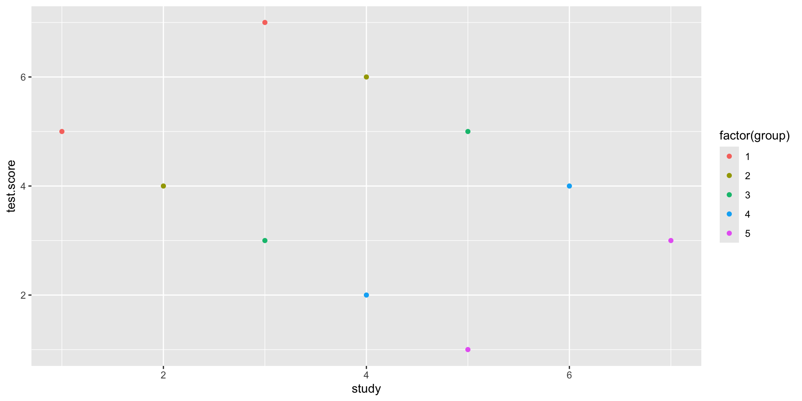
Could aggregate across group
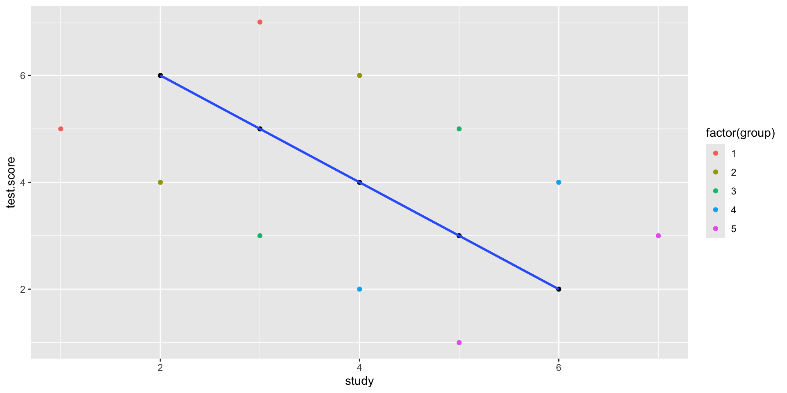
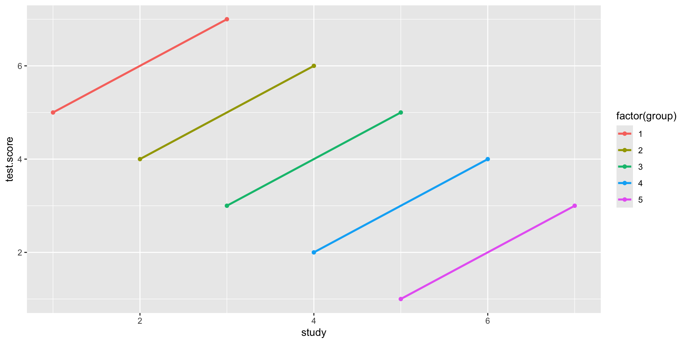
Between person H1: Do students who study more get better grades?
Within person H2: When a student studies, do they get better grades?
H1 and H2 are independent from one another! Aggregation collapses the two. When you have nested data with many DVs it is important to not aggregate.
#compositeskill
Helps to take multilevel and split it into the different levels.
Level 1 is the smallest unit of analysis (students, waves, trials, family members)
Level 2 variables are what level 1 variables are “nested” in (people, schools, counties, families, dyads)
We use the level 1 coefficients as outcomes in a level 2 regression, while level 1 is also estimating its own regression (coefficients as outcomes).
We calculate stroop scores by looking at repeated trials of congruent vs not congruent. This is dummy coded such that the \(\beta_{1}\) reflects the average stroop effect. How much slower are people in incongruent trials?
\[Y_{i} = \beta_{0} + \beta_{1}X_{1} + \varepsilon_i\]
\[Y_{trials, i} = \beta_{0i} + \beta_{1i}X_{trial,i} + \varepsilon_{trial,i}\]
\[\beta_{0} = \gamma_{00} + U_{0i}\] \[\beta_{1} = \gamma_{10} +\gamma_{11}Age_i+ U_{1i}\]
Our B1 coefficient indexes the stroop effect. However, people differ on this stroop effect. There is some average effect (fixed effect) that people vary around. Each person has some personal \(\beta_1\), which we find using Level 1 data. From there we can also ask questions (with regressions) about that random variable.
Same idea with our data: each person has their own average SMN7 connectivity, and people vary around the grand mean.
example <- read_csv("mlm.csv") # same data as above
example$year <- example$week
set.seed(11)
ex.random <- example %>%
dplyr::select(ID) %>%
distinct() %>%
slice_sample(n = 3)
example2 <-
left_join(ex.random, example)
g2<- ggplot(example2,
aes(x = week, y = SMN7, group = ID)) + geom_point() + stat_smooth(method="lm", formula=y~1, se = FALSE) + facet_wrap( ~ID) +
geom_hline(yintercept = mean(example$SMN7)) + ylab("SMN7 connectivity") + xlab("week") +
geom_label(label="Grand mean ", x=1,y=mean(example$SMN7),
label.size = 0.15)
g2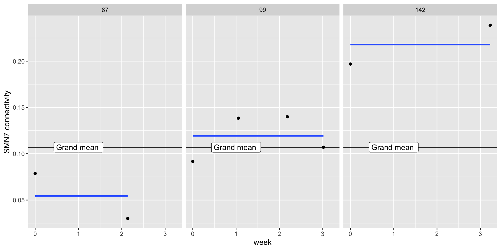
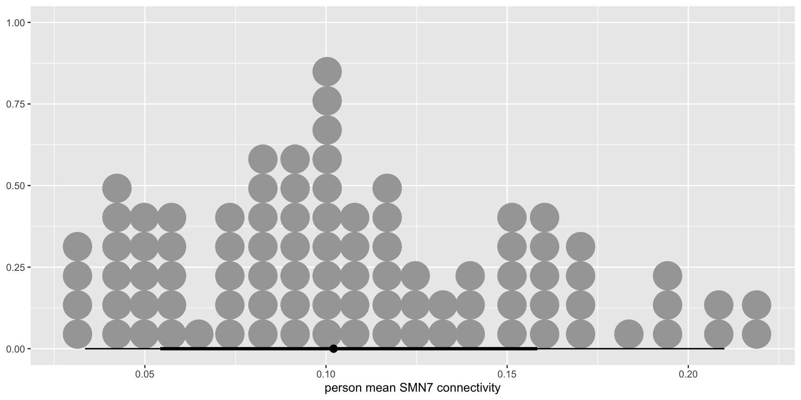
To sum up the first two ways to think about regression, we take a relationship that could be simplified by aggregation, and conduct regressions from regressions. (Regression inception)
The third way is to think of questions at different levels. At level 1 we can ask lower-unit questions e.g., if trials are nested within person, what predicts lengthier trials?
If level 1 is made up of repeated observations, then we can ask level 1/observation level questions like does failure at the trial level impact future trial performance.
At level 2 we can ask broader-unit questions. E.g., is age associated with stroop differences
Often level 2 is between person variables.
Both levels are simple regressions. Level 2 uses coefficients from level 1 as DVs. Level 1 variables are time varying, level 2 variables are time invariant
For standard regression, we think of error as existing in one big bucket called \(\varepsilon\) . Everything that we do not know goes into that bucket, from measurement error to unmeasured important factors.
For MLMs we will be breaking up ( \(\varepsilon\) ) into multiple buckets. These useful “buckets” (Us) are what we refer to as random/varying effects.
\[Y_{trials, i} = \beta_{0i} + \beta_{1i}X_{trial,i} + \varepsilon_{trial}\] \[\beta_{0} = \gamma_{00} + U_{0i}\] \[\beta_{1} = \gamma_{10} +\gamma_{11}Z_i+ U_{1i}\]
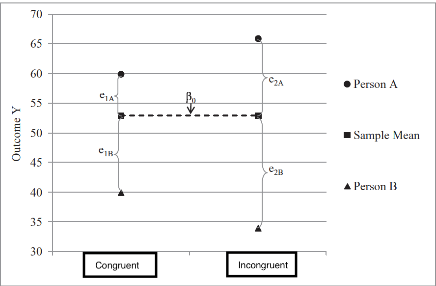
Assume a simple intercept only model where we aggregate across types of trials.
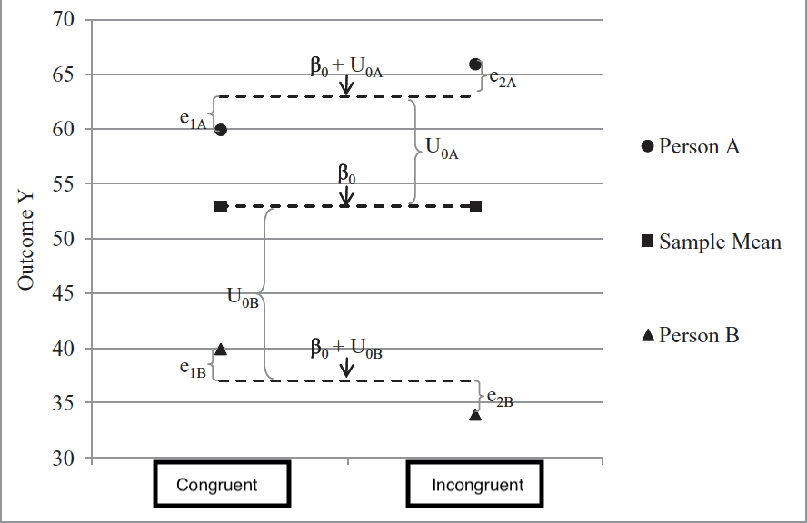
A MLM intercept only model takes what was previously chalked up to error and reassigns it into person specific “buckets”
Model for the means (like normal) and now we have a model for the variance (random effects!)
We will treat random effects as variables themselves e.g. individual differences in reaction time or stroop effect. They index how much people DIFFER on some effect. e.g. does everyone show the same stroop effect?
We can relate the random effects to other random effects e.g., do people who show an effect have a slower reaction time?
We treat our group variable as coming from a population. All groups are alike (because they are from the same population), but different in their own way. Because of this it is helpful to use information from other groups to help make predictions.
We do this in standard regression where we make predictions based on values from the whole dataset (not just binned Xs). We want to pool as this leads to better predictions as we are not overfitting our data!
If we take our simplified stroop effect model (an empty model)
\[Y_{trials, i} = \beta_{0i} + \varepsilon_{trial}\]
\[\beta_{0} = \gamma_{00} + U_{0i}\]
Where does \(U_{0i}\) come from? If we calculated each by hand, through taking the average reaction time for a person i and subtracting that from the grand mean reaction time, would that equal \(U_{0i}\) ?
Complete assumes everyone is the same, with \(U_{0i}\) being zero for everyone.
No pooling is if we calculate every person’s effect with a separate regression, subtracting out the grand mean.
Partial pooling is in the middle, a weighted average between the two. For those with fewer trials there is less information for a particular individual, thus the complete pooling estimate will be given more weight. If someone has a lot of data, their weighted average is closer to no pooling.
Partial pooling prevents both over and under fitting of your data, leading to increased out of sample predictions.
Ignores any dependency. Doesn’t learn from others, assumes everyone is the same. Underfits the model.
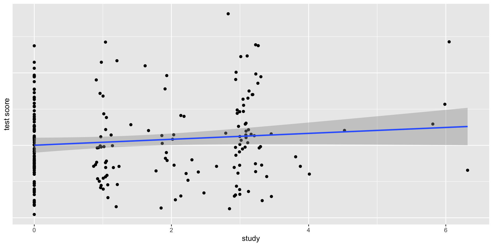
Everyone is unique and we cannot learn from others. Leads to overfitting
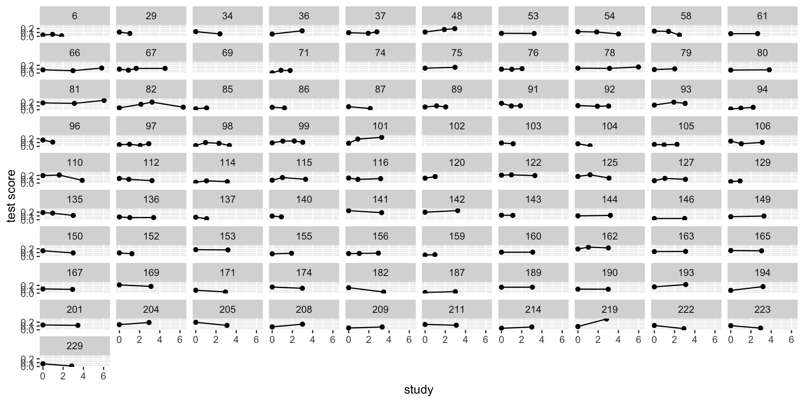
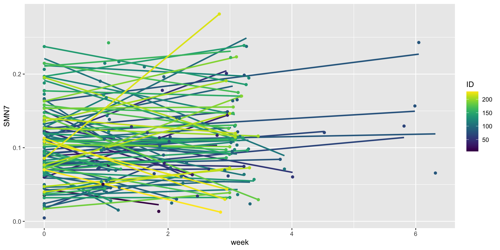
Partial pooling aka shrinkage provides the optimal amount of learning from others. Assumes people come from the same distribution but are distinct from one another.
If you have a little data, then the safe bet is to look at the average. If you have a lot of data, you can ignore others.
In a way, this is similar to Bayesian reasoning where learning is based on how much information you have about a person with other people serving as a prior.
\[\text{y}_{ij} \sim \operatorname{Normal}(\mu_{ij}, \sigma)\] \[\mu_{ij} = \beta_{0[i]}\]
\[\beta_{0[i]} \sim \operatorname{Normal}({\bar \mu}, \sigma_0)\] \[{\bar \mu} \sim {\operatorname{Normal}(0, 1.5)}\] \[\sigma_0 \sim {\operatorname{Half-Normal}(0, 1.5)}\] \[\sigma \sim {\operatorname{Exponential}(1)}\]
We now have a prior for the population of effects. We typically put a prior directly on parameters. Here, because we are using a multilevel model, we are interested in the population of intercepts, not just a single intercept.
Intercept in simple regression –> a (prior/posterior) distribution of possible scores
Intercept in mlm –> a distribution of group/clusters of intercepts. The population we are sampling from can have a distribution (mu, sigma), and that distribution is different from the observed distribution of mu (or sigma)
The person intercepts \(\beta_{0[i]}\) get a prior whose parameters (\(\bar\mu\), \(\sigma_0\)) are themselves estimated: a prior with its own priors.
lab <- tribble(~x, ~y, ~label,
1.2, 3, "bar(mu) %~% Normal(0, 1.5)",
3.2, 3, "sigma[0] %~% HalfNormal(0, 1.5)",
2.2, 2, "beta[0*'['*i*']'] %~% Normal(bar(mu), sigma[0])",
4.2, 2, "sigma %~% Exponential(1)",
3.2, 1, "CON[ij] %~% Normal(beta[0*'['*i*']'], sigma)")
arrows <- tribble(~x, ~y, ~xend, ~yend,
1.3, 2.8, 2.0, 2.2, 3.1, 2.8, 2.4, 2.2,
2.4, 1.8, 3.0, 1.2, 4.0, 1.8, 3.4, 1.2)
ggplot() +
geom_segment(data = arrows, aes(x = x, y = y, xend = xend, yend = yend),
arrow = arrow(length = unit(0.25, "cm"), type = "closed"), colour = "grey50") +
geom_label(data = lab, aes(x = x, y = y, label = label), parse = TRUE, size = 5.5,
label.padding = unit(0.4, "lines"), fill = "grey95") +
annotate("text", x = -0.2, y = c(3, 2, 1), label = c("hyperpriors", "one per person", "one per observation"),
hjust = 0, colour = "grey40", size = 4.5) +
xlim(-0.2, 5) + ylim(0.6, 3.4) + theme_void()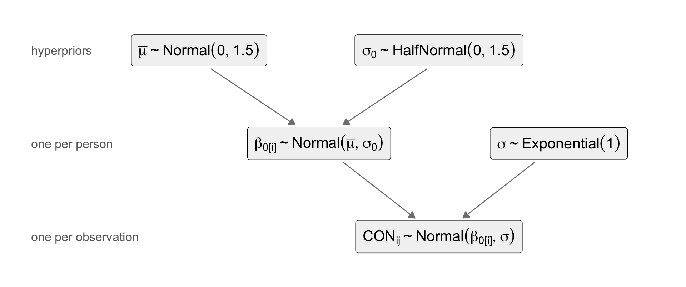
If we are estimating a mean, we can divide that up into two priors:
A distribution of our best guess at the mean e.g., N(3,.5) means I am very confident in my guess vs N(3,50). This is all about the mean.
A distribution that represents the spread around that mean e.g., N(0,1) suggests small spread vs (0,100) suggest people may differ a lot (Even though the distribution has the same mean).
Fixed effect describes #1 whereas random effects describe #2
library(brms)
mlm.1 <-
brm(family = gaussian,
CON ~ 1 + (1 | ID),
prior = c(prior(normal(0, 1.5), class = Intercept),
prior(normal(0, 1.5), class = sd),
prior(exponential(1), class = sigma)),
iter = 5000, warmup = 1000, chains = 4, cores = 4,
sample_prior = "yes",
data = mlm,
backend = "cmdstanr",
file = "mlm.1")If you think about parameters you are estimating the number of priors are simple. But in terms of what those priors represent, they are providing a prior on a prior. The intercept and the SD are both providing estimates of means. We could model this 1 parameter (anova or index coded) or 2 (mlm)
mlm.1 summary Family: gaussian
Links: mu = identity; sigma = identity
Formula: CON ~ 1 + (1 | ID)
Data: mlm (Number of observations: 225)
Draws: 4 chains, each with iter = 5000; warmup = 1000; thin = 1;
total post-warmup draws = 16000
Multilevel Hyperparameters:
~ID (Number of levels: 91)
Estimate Est.Error l-95% CI u-95% CI Rhat Bulk_ESS Tail_ESS
sd(Intercept) 0.06 0.01 0.05 0.07 1.00 5761 8415
Regression Coefficients:
Estimate Est.Error l-95% CI u-95% CI Rhat Bulk_ESS Tail_ESS
Intercept 0.19 0.01 0.18 0.20 1.00 8349 10553
Further Distributional Parameters:
Estimate Est.Error l-95% CI u-95% CI Rhat Bulk_ESS Tail_ESS
sigma 0.05 0.00 0.04 0.05 1.00 10318 12737
Draws were sampled using sample(hmc). For each parameter, Bulk_ESS
and Tail_ESS are effective sample size measures, and Rhat is the potential
scale reduction factor on split chains (at convergence, Rhat = 1).The intraclass correlation: the share of the total variance that is between people,
\[\text{ICC} = \frac{\sigma_0^2}{\sigma_0^2 + \sigma^2}\]
Compute it draw by draw, so it gets its own posterior:
About 60% of the variation in CON is stable differences between people; about 40% is scan-to-scan change within a person. Equivalently, two scans from the same person correlate about .6.
Notice we have one less parameter we are estimating.
mlm.2 summary Family: gaussian
Links: mu = identity; sigma = identity
Formula: CON ~ 1
Data: mlm (Number of observations: 225)
Draws: 4 chains, each with iter = 5000; warmup = 1000; thin = 1;
total post-warmup draws = 16000
Regression Coefficients:
Estimate Est.Error l-95% CI u-95% CI Rhat Bulk_ESS Tail_ESS
Intercept 0.19 0.00 0.18 0.20 1.00 16589 10784
Further Distributional Parameters:
Estimate Est.Error l-95% CI u-95% CI Rhat Bulk_ESS Tail_ESS
sigma 0.07 0.00 0.07 0.08 1.00 10191 9816
Draws were sampled using sample(hmc). For each parameter, Bulk_ESS
and Tail_ESS are effective sample size measures, and Rhat is the potential
scale reduction factor on split chains (at convergence, Rhat = 1).Notice how the intercept estimate is about the same in each of these models, but the MLM’s interval is wider: it knows the 91 people differ, so it is less sure about the average person. Conceptually they are different too. The intercept is directly modeled in the standard regression. In the MLM it is better thought of as the map of the distribution of random effects.
The population is larger than what we have. This is true for almost anything we do. We sample paradigms, we sample people, we usually never have a full population under our study. Don’t we want to model that variation?
\[\text{y}_{ij} \sim \operatorname{Normal}(\mu_{ij}, \sigma)\] \[\mu_{ij} = \beta_{0[i]}\] The [i] subscript indicates we have varying intercepts that vary over individual i. Each parameter estimated needs a prior. \[\beta_{0[i]} \sim \operatorname{Normal}({\bar \mu}, \sigma_0)\] \[{\bar \mu} \sim {\operatorname{Normal}(0, 1.5)}\] \[\sigma_0 \sim {\operatorname{Half-Normal}(0, 1.5)}\] \[\sigma \sim {\operatorname{Exponential}(1)}\]
With mlm we treated means as coming from a population of means. And thus there was a best guess of the mean (intercept) and variation around that guess (SD). With anova we ignored the variation. But we could, in bayes, still examine that variation. Lets fit an index model, where each person gets a mean.
This is similar to a “fixed effect” model, something that is popular in econometrics. It, in contrast to the random effect model, does not model random effects.
Why do we want to model random effects? Variance decomposition which leads to increased power.
Also, 1. we can include group/cluster level predictors, which fixed effect cannot. 2. it makes an assumption about whether the clusters are random or not. Psych they are almost always random (people, site, orgs) whereas for econometrics they aren’t (country, state).
mlm.id summary Family: gaussian
Links: mu = identity; sigma = identity
Formula: CON ~ 0 + ID.f
Data: mlm (Number of observations: 225)
Draws: 2 chains, each with iter = 4000; warmup = 1000; thin = 1;
total post-warmup draws = 6000
Regression Coefficients:
Estimate Est.Error l-95% CI u-95% CI Rhat Bulk_ESS Tail_ESS
ID.f6 0.19 0.03 0.13 0.25 1.00 10924 3696
ID.f29 0.12 0.03 0.06 0.19 1.00 9118 4858
ID.f34 0.11 0.03 0.04 0.17 1.00 9838 4057
ID.f36 0.16 0.03 0.09 0.23 1.00 9798 4244
ID.f37 0.19 0.03 0.13 0.24 1.00 7867 4261
ID.f48 0.22 0.03 0.16 0.27 1.00 10144 4439
ID.f53 0.19 0.03 0.12 0.26 1.00 10557 4631
ID.f54 0.24 0.03 0.19 0.30 1.00 8629 4163
ID.f58 0.23 0.03 0.18 0.29 1.00 10315 4384
ID.f61 0.09 0.03 0.02 0.15 1.00 9320 4228
ID.f66 0.24 0.03 0.18 0.29 1.00 8576 4507
ID.f67 0.20 0.02 0.15 0.25 1.00 10307 4290
ID.f69 0.21 0.03 0.14 0.27 1.00 8653 4040
ID.f71 0.06 0.03 0.01 0.11 1.00 7862 4688
ID.f74 0.20 0.03 0.15 0.26 1.00 9842 4185
ID.f75 0.27 0.03 0.21 0.34 1.00 9410 4550
ID.f76 0.10 0.03 0.04 0.15 1.00 9381 3719
ID.f78 0.25 0.03 0.19 0.30 1.00 9223 4485
ID.f79 0.13 0.03 0.06 0.20 1.00 10651 4380
ID.f80 0.14 0.03 0.07 0.21 1.00 8803 3909
ID.f81 0.24 0.03 0.19 0.29 1.00 10760 3948
ID.f82 0.33 0.02 0.28 0.37 1.00 9687 4371
ID.f85 0.16 0.03 0.09 0.22 1.00 10246 4192
ID.f86 0.12 0.03 0.05 0.18 1.00 9680 4230
ID.f87 0.11 0.03 0.05 0.17 1.00 10253 4542
ID.f89 0.14 0.03 0.08 0.19 1.00 11259 4270
ID.f91 0.17 0.03 0.12 0.23 1.00 7766 4474
ID.f92 0.20 0.03 0.15 0.26 1.00 8776 4385
ID.f93 0.25 0.03 0.20 0.31 1.00 8575 4257
ID.f94 0.12 0.03 0.07 0.17 1.00 8959 4182
ID.f96 0.23 0.03 0.17 0.30 1.00 10164 4151
ID.f97 0.25 0.02 0.20 0.29 1.00 9816 3991
ID.f98 0.14 0.02 0.09 0.19 1.00 8659 4126
ID.f99 0.18 0.02 0.13 0.23 1.00 9669 3954
ID.f101 0.25 0.03 0.19 0.30 1.00 10001 4066
ID.f102 0.19 0.02 0.14 0.24 1.00 9703 3888
ID.f103 0.15 0.03 0.09 0.22 1.00 9353 3941
ID.f104 0.17 0.03 0.11 0.24 1.00 8637 4350
ID.f105 0.16 0.03 0.11 0.22 1.00 9213 3772
ID.f106 0.20 0.03 0.14 0.25 1.00 9950 4388
ID.f110 0.18 0.03 0.13 0.23 1.00 8712 4395
ID.f112 0.09 0.03 0.04 0.15 1.00 9954 4478
ID.f114 0.13 0.03 0.08 0.19 1.00 10938 4131
ID.f115 0.14 0.03 0.09 0.20 1.00 9488 4599
ID.f116 0.14 0.03 0.09 0.20 1.00 10366 4372
ID.f120 0.35 0.03 0.29 0.42 1.00 9298 3807
ID.f122 0.17 0.03 0.12 0.22 1.00 11020 4272
ID.f125 0.20 0.03 0.14 0.25 1.00 9336 4267
ID.f127 0.23 0.03 0.17 0.28 1.00 9474 4524
ID.f129 0.13 0.03 0.06 0.20 1.00 12581 4027
ID.f135 0.30 0.03 0.24 0.35 1.00 9638 4229
ID.f136 0.29 0.03 0.24 0.34 1.00 10695 4402
ID.f137 0.29 0.03 0.23 0.36 1.00 8942 4181
ID.f140 0.13 0.03 0.06 0.19 1.00 8470 4316
ID.f141 0.19 0.03 0.13 0.26 1.00 9389 4196
ID.f142 0.18 0.03 0.11 0.24 1.00 10253 3800
ID.f143 0.31 0.03 0.25 0.38 1.00 10054 3865
ID.f144 0.17 0.03 0.11 0.24 1.00 7105 4359
ID.f146 0.21 0.03 0.14 0.28 1.00 9564 3766
ID.f149 0.23 0.03 0.16 0.30 1.00 10981 3875
ID.f150 0.20 0.03 0.13 0.27 1.00 10083 3732
ID.f152 0.22 0.03 0.16 0.29 1.00 9769 3841
ID.f153 0.15 0.03 0.08 0.21 1.00 9864 4201
ID.f155 0.14 0.03 0.08 0.21 1.00 10010 4122
ID.f156 0.14 0.03 0.08 0.19 1.00 11558 4147
ID.f159 0.12 0.03 0.06 0.19 1.00 9704 4022
ID.f160 0.18 0.03 0.11 0.24 1.00 8643 3855
ID.f162 0.39 0.03 0.34 0.45 1.00 9210 4318
ID.f163 0.13 0.03 0.07 0.20 1.00 9529 4130
ID.f165 0.20 0.03 0.13 0.26 1.00 9787 4099
ID.f167 0.13 0.03 0.07 0.20 1.00 9169 4571
ID.f169 0.24 0.03 0.18 0.31 1.00 8591 4415
ID.f171 0.23 0.03 0.16 0.29 1.00 9039 4176
ID.f174 0.26 0.03 0.20 0.33 1.00 9751 4180
ID.f182 0.19 0.03 0.12 0.25 1.00 8801 4093
ID.f187 0.06 0.03 -0.00 0.13 1.00 9681 4140
ID.f189 0.22 0.03 0.15 0.29 1.00 7780 4111
ID.f190 0.13 0.03 0.06 0.19 1.00 9980 4381
ID.f193 0.21 0.03 0.14 0.27 1.00 9616 4207
ID.f194 0.12 0.03 0.05 0.18 1.00 10107 4273
ID.f201 0.19 0.03 0.12 0.25 1.00 10278 4100
ID.f204 0.29 0.03 0.22 0.35 1.00 8399 4322
ID.f205 0.19 0.03 0.13 0.26 1.00 9627 4526
ID.f208 0.20 0.03 0.14 0.27 1.00 11281 4034
ID.f209 0.21 0.03 0.14 0.28 1.00 10907 4106
ID.f211 0.14 0.03 0.07 0.21 1.00 9153 4547
ID.f214 0.28 0.03 0.21 0.34 1.00 9734 4248
ID.f219 0.23 0.03 0.16 0.30 1.00 10046 3937
ID.f222 0.14 0.03 0.07 0.20 1.00 9970 4305
ID.f223 0.17 0.03 0.10 0.23 1.00 10288 4224
ID.f229 0.14 0.03 0.08 0.21 1.00 10279 4164
Further Distributional Parameters:
Estimate Est.Error l-95% CI u-95% CI Rhat Bulk_ESS Tail_ESS
sigma 0.05 0.00 0.04 0.05 1.00 3686 4264
Draws were sampled using sample(hmc). For each parameter, Bulk_ESS
and Tail_ESS are effective sample size measures, and Rhat is the potential
scale reduction factor on split chains (at convergence, Rhat = 1).\(\sigma_0\) (our random effect) can help turn on/off/adjust shrinkage.
Setting SD to zero says everyone is the same. Infinite SD suggests no pooling (and major differences in pop values). In the middle gives you partial pooling.
We use our prior of \(\sigma_0\) plus our data to get an estimate of \(\beta_{0[j]}\). This is how we accurately partial pool.
\[\text{y}_{ij} \sim \operatorname{Normal}(\mu_i, \sigma)\]
\[\mu_i = \beta_{0[i]}\]
\[\beta_{0[i]} \sim \operatorname{Normal}({\bar \mu}, \sigma_0)\] \[{\bar \mu} \sim {\operatorname{Normal}(0, 1.5)}\]
\[\sigma_0 \sim {\operatorname{Half-Normal}(0, 1.5)}\]
\[\sigma \sim {\operatorname{Exponential}(1)}\]
Family: gaussian
Links: mu = identity; sigma = identity
Formula: CON ~ 1 + (1 | ID)
Data: mlm (Number of observations: 225)
Draws: 4 chains, each with iter = 5000; warmup = 1000; thin = 1;
total post-warmup draws = 16000
Multilevel Hyperparameters:
~ID (Number of levels: 91)
Estimate Est.Error l-95% CI u-95% CI Rhat Bulk_ESS Tail_ESS
sd(Intercept) 0.06 0.01 0.05 0.07 1.00 5761 8415
Regression Coefficients:
Estimate Est.Error l-95% CI u-95% CI Rhat Bulk_ESS Tail_ESS
Intercept 0.19 0.01 0.18 0.20 1.00 8349 10553
Further Distributional Parameters:
Estimate Est.Error l-95% CI u-95% CI Rhat Bulk_ESS Tail_ESS
sigma 0.05 0.00 0.04 0.05 1.00 10318 12737
Draws were sampled using sample(hmc). For each parameter, Bulk_ESS
and Tail_ESS are effective sample size measures, and Rhat is the potential
scale reduction factor on split chains (at convergence, Rhat = 1). [1] "b_Intercept" "sd_ID__Intercept" "sigma"
[4] "Intercept" "r_ID[6,Intercept]" "r_ID[29,Intercept]"
[7] "r_ID[34,Intercept]" "r_ID[36,Intercept]" "r_ID[37,Intercept]"
[10] "r_ID[48,Intercept]" "r_ID[53,Intercept]" "r_ID[54,Intercept]"
[13] "r_ID[58,Intercept]" "r_ID[61,Intercept]" "r_ID[66,Intercept]"
[16] "r_ID[67,Intercept]" "r_ID[69,Intercept]" "r_ID[71,Intercept]"
[19] "r_ID[74,Intercept]" "r_ID[75,Intercept]" "r_ID[76,Intercept]"
[22] "r_ID[78,Intercept]" "r_ID[79,Intercept]" "r_ID[80,Intercept]"
[25] "r_ID[81,Intercept]" "r_ID[82,Intercept]" "r_ID[85,Intercept]"
[28] "r_ID[86,Intercept]" "r_ID[87,Intercept]" "r_ID[89,Intercept]"
[31] "r_ID[91,Intercept]" "r_ID[92,Intercept]" "r_ID[93,Intercept]"
[34] "r_ID[94,Intercept]" "r_ID[96,Intercept]" "r_ID[97,Intercept]"
[37] "r_ID[98,Intercept]" "r_ID[99,Intercept]" "r_ID[101,Intercept]"
[40] "r_ID[102,Intercept]" "r_ID[103,Intercept]" "r_ID[104,Intercept]"
[43] "r_ID[105,Intercept]" "r_ID[106,Intercept]" "r_ID[110,Intercept]"
[46] "r_ID[112,Intercept]" "r_ID[114,Intercept]" "r_ID[115,Intercept]"
[49] "r_ID[116,Intercept]" "r_ID[120,Intercept]" "r_ID[122,Intercept]"
[52] "r_ID[125,Intercept]" "r_ID[127,Intercept]" "r_ID[129,Intercept]"
[55] "r_ID[135,Intercept]" "r_ID[136,Intercept]" "r_ID[137,Intercept]"
[58] "r_ID[140,Intercept]" "r_ID[141,Intercept]" "r_ID[142,Intercept]"
[61] "r_ID[143,Intercept]" "r_ID[144,Intercept]" "r_ID[146,Intercept]"
[64] "r_ID[149,Intercept]" "r_ID[150,Intercept]" "r_ID[152,Intercept]"
[67] "r_ID[153,Intercept]" "r_ID[155,Intercept]" "r_ID[156,Intercept]"
[70] "r_ID[159,Intercept]" "r_ID[160,Intercept]" "r_ID[162,Intercept]"
[73] "r_ID[163,Intercept]" "r_ID[165,Intercept]" "r_ID[167,Intercept]"
[76] "r_ID[169,Intercept]" "r_ID[171,Intercept]" "r_ID[174,Intercept]"
[79] "r_ID[182,Intercept]" "r_ID[187,Intercept]" "r_ID[189,Intercept]"
[82] "r_ID[190,Intercept]" "r_ID[193,Intercept]" "r_ID[194,Intercept]"
[85] "r_ID[201,Intercept]" "r_ID[204,Intercept]" "r_ID[205,Intercept]"
[88] "r_ID[208,Intercept]" "r_ID[209,Intercept]" "r_ID[211,Intercept]"
[91] "r_ID[214,Intercept]" "r_ID[219,Intercept]" "r_ID[222,Intercept]"
[94] "r_ID[223,Intercept]" "r_ID[229,Intercept]" "prior_Intercept"
[97] "prior_sigma" "prior_sd_ID" "lprior"
[100] "lp__" "accept_stat__" "treedepth__"
[103] "stepsize__" "divergent__" "n_leapfrog__"
[106] "energy__" # A tibble: 1,456,000 × 6
# Groups: ID, term [91]
ID term r_ID .chain .iteration .draw
<int> <chr> <dbl> <int> <int> <int>
1 6 Intercept 0.0133 1 1 1
2 6 Intercept -0.00438 1 2 2
3 6 Intercept 0.0214 1 3 3
4 6 Intercept 0.00738 1 4 4
5 6 Intercept -0.0173 1 5 5
6 6 Intercept -0.0386 1 6 6
7 6 Intercept 0.0233 1 7 7
8 6 Intercept -0.0351 1 8 8
9 6 Intercept 0.0346 1 9 9
10 6 Intercept -0.0349 1 10 10
# ℹ 1,455,990 more rows16,000 draws (4 chains × 4,000 post-warmup iterations) × 91 people
# A tibble: 1,456,000 × 5
# Groups: ID [91]
ID r_ID .chain .iteration .draw
<int> <dbl> <int> <int> <int>
1 6 0.0133 1 1 1
2 6 -0.00438 1 2 2
3 6 0.0214 1 3 3
4 6 0.00738 1 4 4
5 6 -0.0173 1 5 5
6 6 -0.0386 1 6 6
7 6 0.0233 1 7 7
8 6 -0.0351 1 8 8
9 6 0.0346 1 9 9
10 6 -0.0349 1 10 10
# ℹ 1,455,990 more rows# A tibble: 91 × 8
ID term r_ID .lower .upper .width .point .interval
<int> <chr> <dbl> <dbl> <dbl> <dbl> <chr> <chr>
1 6 Intercept 0.000562 -0.0491 0.0504 0.95 median qi
2 29 Intercept -0.0479 -0.106 0.0101 0.95 median qi
3 34 Intercept -0.0614 -0.118 -0.00512 0.95 median qi
4 36 Intercept -0.0219 -0.0784 0.0347 0.95 median qi
5 37 Intercept -0.00311 -0.0523 0.0464 0.95 median qi
6 48 Intercept 0.0238 -0.0266 0.0727 0.95 median qi
7 53 Intercept 0.000709 -0.0557 0.0567 0.95 median qi
8 54 Intercept 0.0454 -0.00412 0.0944 0.95 median qi
9 58 Intercept 0.0369 -0.0122 0.0861 0.95 median qi
10 61 Intercept -0.0749 -0.133 -0.0166 0.95 median qi
# ℹ 81 more rowsThink back to {lme4} and ranef coef and fixef functions.
What do each of these describe?
What scale is our random effect (typically) in?
# A tibble: 1,456,000 × 7
# Groups: ID, term [91]
.chain .iteration .draw b_Intercept ID term r_ID
<int> <int> <int> <dbl> <int> <chr> <dbl>
1 1 1 1 0.189 6 Intercept 0.0133
2 1 1 1 0.189 29 Intercept -0.0511
3 1 1 1 0.189 34 Intercept -0.0897
4 1 1 1 0.189 36 Intercept -0.0200
5 1 1 1 0.189 37 Intercept 0.0412
6 1 1 1 0.189 48 Intercept 0.0104
7 1 1 1 0.189 53 Intercept 0.0844
8 1 1 1 0.189 54 Intercept -0.00270
9 1 1 1 0.189 58 Intercept 0.0389
10 1 1 1 0.189 61 Intercept -0.0712
# ℹ 1,455,990 more rows# A tibble: 1,456,000 × 8
# Groups: ID, term [91]
.chain .iteration .draw b_Intercept ID term r_ID person_I
<int> <int> <int> <dbl> <int> <chr> <dbl> <dbl>
1 1 1 1 0.189 6 Intercept 0.0133 0.203
2 1 1 1 0.189 29 Intercept -0.0511 0.138
3 1 1 1 0.189 34 Intercept -0.0897 0.0997
4 1 1 1 0.189 36 Intercept -0.0200 0.169
5 1 1 1 0.189 37 Intercept 0.0412 0.230
6 1 1 1 0.189 48 Intercept 0.0104 0.200
7 1 1 1 0.189 53 Intercept 0.0844 0.274
8 1 1 1 0.189 54 Intercept -0.00270 0.187
9 1 1 1 0.189 58 Intercept 0.0389 0.228
10 1 1 1 0.189 61 Intercept -0.0712 0.118
# ℹ 1,455,990 more rows# for a paper: add ggsave("shrinkage.png", width = 6.5, height = 4.5) after the plot
raw <- mlm %>% group_by(ID) %>% summarise(raw = mean(CON), n = n())
pooled <- mlm.1 %>%
spread_draws(b_Intercept, r_ID[ID, term]) %>%
mutate(pooled = b_Intercept + r_ID) %>%
group_by(ID) %>%
summarise(pooled = mean(pooled))
grand <- fixef(mlm.1)["Intercept", "Estimate"]
shrink <- left_join(raw, pooled, by = "ID") %>% mutate(ID = fct_reorder(factor(ID), raw))
ggplot(shrink, aes(y = ID)) +
geom_vline(xintercept = grand, linetype = "dashed", colour = "grey50") +
geom_segment(aes(x = raw, xend = pooled, yend = ID), colour = "grey60",
arrow = arrow(length = unit(0.12, "cm"), type = "closed")) +
geom_point(aes(x = raw, size = factor(n)), shape = 21, fill = "white") +
geom_point(aes(x = pooled), colour = "#4C78A8", size = 1.6) +
scale_size_manual(values = c(`2` = 1.2, `3` = 2.2, `4` = 3.2)) +
labs(x = "CON connectivity (person mean)", y = "Person (sorted by raw mean)", size = "Scans",
caption = "Open circles: each person's raw mean (no pooling). Blue: partially pooled estimate from the empty model.\nArrows show shrinkage toward the grand mean (dashed). Extreme means from people with few scans move the most.") +
theme_classic(base_size = 13) +
theme(axis.text.y = element_blank(), axis.ticks.y = element_blank(),
plot.caption = element_text(hjust = 0), legend.position = "top")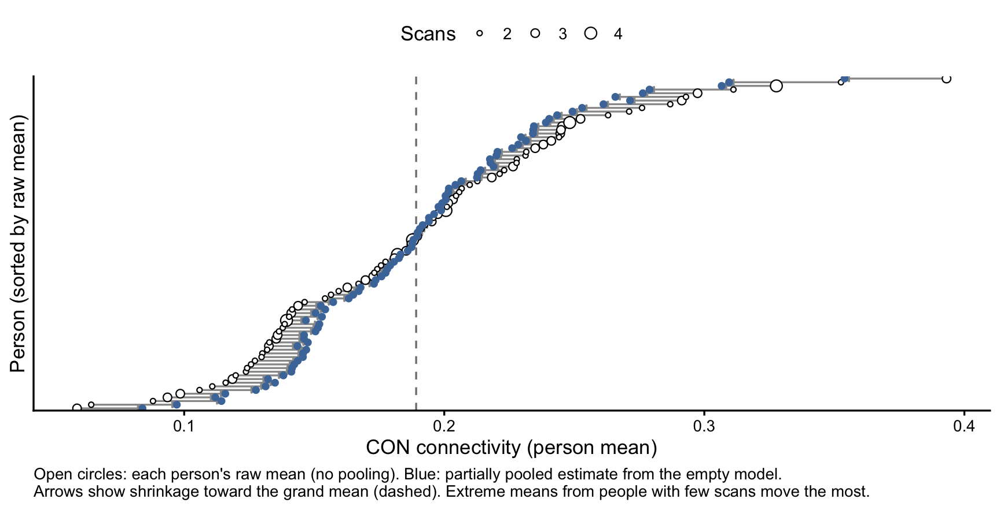
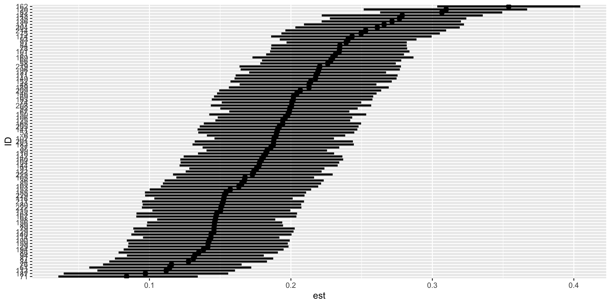
Set prior for random effect to almost zero for complete pooling.
mlm.1p <-
brm(family = gaussian,
CON ~ 1 + (1 | ID),
prior = c(prior(normal(0, 1.5), class = Intercept),
prior(normal(0, .00001), class = sd),
prior(exponential(1), class = sigma)),
iter = 4000, warmup = 1000, chains = 4, cores = 4,
sample_prior = "yes",
file = "mlm.1p",
backend = "cmdstanr",
data = mlm)mlm.1p summary Family: gaussian
Links: mu = identity; sigma = identity
Formula: CON ~ 1 + (1 | ID)
Data: mlm (Number of observations: 225)
Draws: 4 chains, each with iter = 4000; warmup = 1000; thin = 1;
total post-warmup draws = 12000
Multilevel Hyperparameters:
~ID (Number of levels: 91)
Estimate Est.Error l-95% CI u-95% CI Rhat Bulk_ESS Tail_ESS
sd(Intercept) 0.00 0.00 0.00 0.00 1.00 8952 6581
Regression Coefficients:
Estimate Est.Error l-95% CI u-95% CI Rhat Bulk_ESS Tail_ESS
Intercept 0.19 0.00 0.18 0.20 1.00 19393 8474
Further Distributional Parameters:
Estimate Est.Error l-95% CI u-95% CI Rhat Bulk_ESS Tail_ESS
sigma 0.07 0.00 0.07 0.08 1.00 21537 7644
Draws were sampled using sample(hmc). For each parameter, Bulk_ESS
and Tail_ESS are effective sample size measures, and Rhat is the potential
scale reduction factor on split chains (at convergence, Rhat = 1).mlm.1p %>%
spread_draws(b_Intercept, r_ID[ID, term]) %>%
mutate(person_I = b_Intercept + r_ID) %>%
left_join(mlm %>% select (ID, CON) %>% group_by(ID) %>% mutate(CON = mean(CON))) %>%
median_qi() %>%
ggplot(aes(x = ID)) +
geom_point(aes(y = person_I), color = "orange2") +
geom_point(aes(y = CON), shape = 1) +
labs(title =
"complete pooling") +
geom_hline(yintercept = fixef(mlm.1)["Intercept", "Estimate"])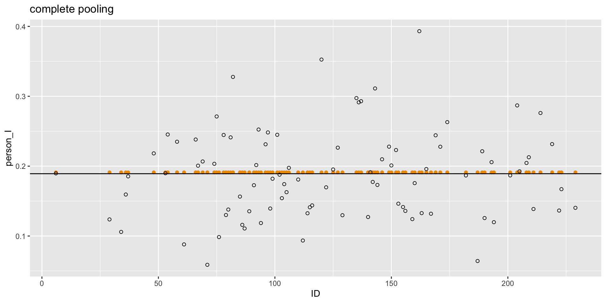
No pooling means you are not learning from other data, which is by default not an MLM model. We already fit this fixed effects no intercept model above.
Family: gaussian
Links: mu = identity; sigma = identity
Formula: CON ~ 0 + ID.f
Data: mlm (Number of observations: 225)
Draws: 2 chains, each with iter = 4000; warmup = 1000; thin = 1;
total post-warmup draws = 6000
Regression Coefficients:
Estimate Est.Error l-95% CI u-95% CI Rhat Bulk_ESS Tail_ESS
ID.f6 0.19 0.03 0.13 0.25 1.00 10924 3696
ID.f29 0.12 0.03 0.06 0.19 1.00 9118 4858
ID.f34 0.11 0.03 0.04 0.17 1.00 9838 4057
ID.f36 0.16 0.03 0.09 0.23 1.00 9798 4244
ID.f37 0.19 0.03 0.13 0.24 1.00 7867 4261
ID.f48 0.22 0.03 0.16 0.27 1.00 10144 4439
ID.f53 0.19 0.03 0.12 0.26 1.00 10557 4631
ID.f54 0.24 0.03 0.19 0.30 1.00 8629 4163
ID.f58 0.23 0.03 0.18 0.29 1.00 10315 4384
ID.f61 0.09 0.03 0.02 0.15 1.00 9320 4228
ID.f66 0.24 0.03 0.18 0.29 1.00 8576 4507
ID.f67 0.20 0.02 0.15 0.25 1.00 10307 4290
ID.f69 0.21 0.03 0.14 0.27 1.00 8653 4040
ID.f71 0.06 0.03 0.01 0.11 1.00 7862 4688
ID.f74 0.20 0.03 0.15 0.26 1.00 9842 4185
ID.f75 0.27 0.03 0.21 0.34 1.00 9410 4550
ID.f76 0.10 0.03 0.04 0.15 1.00 9381 3719
ID.f78 0.25 0.03 0.19 0.30 1.00 9223 4485
ID.f79 0.13 0.03 0.06 0.20 1.00 10651 4380
ID.f80 0.14 0.03 0.07 0.21 1.00 8803 3909
ID.f81 0.24 0.03 0.19 0.29 1.00 10760 3948
ID.f82 0.33 0.02 0.28 0.37 1.00 9687 4371
ID.f85 0.16 0.03 0.09 0.22 1.00 10246 4192
ID.f86 0.12 0.03 0.05 0.18 1.00 9680 4230
ID.f87 0.11 0.03 0.05 0.17 1.00 10253 4542
ID.f89 0.14 0.03 0.08 0.19 1.00 11259 4270
ID.f91 0.17 0.03 0.12 0.23 1.00 7766 4474
ID.f92 0.20 0.03 0.15 0.26 1.00 8776 4385
ID.f93 0.25 0.03 0.20 0.31 1.00 8575 4257
ID.f94 0.12 0.03 0.07 0.17 1.00 8959 4182
ID.f96 0.23 0.03 0.17 0.30 1.00 10164 4151
ID.f97 0.25 0.02 0.20 0.29 1.00 9816 3991
ID.f98 0.14 0.02 0.09 0.19 1.00 8659 4126
ID.f99 0.18 0.02 0.13 0.23 1.00 9669 3954
ID.f101 0.25 0.03 0.19 0.30 1.00 10001 4066
ID.f102 0.19 0.02 0.14 0.24 1.00 9703 3888
ID.f103 0.15 0.03 0.09 0.22 1.00 9353 3941
ID.f104 0.17 0.03 0.11 0.24 1.00 8637 4350
ID.f105 0.16 0.03 0.11 0.22 1.00 9213 3772
ID.f106 0.20 0.03 0.14 0.25 1.00 9950 4388
ID.f110 0.18 0.03 0.13 0.23 1.00 8712 4395
ID.f112 0.09 0.03 0.04 0.15 1.00 9954 4478
ID.f114 0.13 0.03 0.08 0.19 1.00 10938 4131
ID.f115 0.14 0.03 0.09 0.20 1.00 9488 4599
ID.f116 0.14 0.03 0.09 0.20 1.00 10366 4372
ID.f120 0.35 0.03 0.29 0.42 1.00 9298 3807
ID.f122 0.17 0.03 0.12 0.22 1.00 11020 4272
ID.f125 0.20 0.03 0.14 0.25 1.00 9336 4267
ID.f127 0.23 0.03 0.17 0.28 1.00 9474 4524
ID.f129 0.13 0.03 0.06 0.20 1.00 12581 4027
ID.f135 0.30 0.03 0.24 0.35 1.00 9638 4229
ID.f136 0.29 0.03 0.24 0.34 1.00 10695 4402
ID.f137 0.29 0.03 0.23 0.36 1.00 8942 4181
ID.f140 0.13 0.03 0.06 0.19 1.00 8470 4316
ID.f141 0.19 0.03 0.13 0.26 1.00 9389 4196
ID.f142 0.18 0.03 0.11 0.24 1.00 10253 3800
ID.f143 0.31 0.03 0.25 0.38 1.00 10054 3865
ID.f144 0.17 0.03 0.11 0.24 1.00 7105 4359
ID.f146 0.21 0.03 0.14 0.28 1.00 9564 3766
ID.f149 0.23 0.03 0.16 0.30 1.00 10981 3875
ID.f150 0.20 0.03 0.13 0.27 1.00 10083 3732
ID.f152 0.22 0.03 0.16 0.29 1.00 9769 3841
ID.f153 0.15 0.03 0.08 0.21 1.00 9864 4201
ID.f155 0.14 0.03 0.08 0.21 1.00 10010 4122
ID.f156 0.14 0.03 0.08 0.19 1.00 11558 4147
ID.f159 0.12 0.03 0.06 0.19 1.00 9704 4022
ID.f160 0.18 0.03 0.11 0.24 1.00 8643 3855
ID.f162 0.39 0.03 0.34 0.45 1.00 9210 4318
ID.f163 0.13 0.03 0.07 0.20 1.00 9529 4130
ID.f165 0.20 0.03 0.13 0.26 1.00 9787 4099
ID.f167 0.13 0.03 0.07 0.20 1.00 9169 4571
ID.f169 0.24 0.03 0.18 0.31 1.00 8591 4415
ID.f171 0.23 0.03 0.16 0.29 1.00 9039 4176
ID.f174 0.26 0.03 0.20 0.33 1.00 9751 4180
ID.f182 0.19 0.03 0.12 0.25 1.00 8801 4093
ID.f187 0.06 0.03 -0.00 0.13 1.00 9681 4140
ID.f189 0.22 0.03 0.15 0.29 1.00 7780 4111
ID.f190 0.13 0.03 0.06 0.19 1.00 9980 4381
ID.f193 0.21 0.03 0.14 0.27 1.00 9616 4207
ID.f194 0.12 0.03 0.05 0.18 1.00 10107 4273
ID.f201 0.19 0.03 0.12 0.25 1.00 10278 4100
ID.f204 0.29 0.03 0.22 0.35 1.00 8399 4322
ID.f205 0.19 0.03 0.13 0.26 1.00 9627 4526
ID.f208 0.20 0.03 0.14 0.27 1.00 11281 4034
ID.f209 0.21 0.03 0.14 0.28 1.00 10907 4106
ID.f211 0.14 0.03 0.07 0.21 1.00 9153 4547
ID.f214 0.28 0.03 0.21 0.34 1.00 9734 4248
ID.f219 0.23 0.03 0.16 0.30 1.00 10046 3937
ID.f222 0.14 0.03 0.07 0.20 1.00 9970 4305
ID.f223 0.17 0.03 0.10 0.23 1.00 10288 4224
ID.f229 0.14 0.03 0.08 0.21 1.00 10279 4164
Further Distributional Parameters:
Estimate Est.Error l-95% CI u-95% CI Rhat Bulk_ESS Tail_ESS
sigma 0.05 0.00 0.04 0.05 1.00 3686 4264
Draws were sampled using sample(hmc). For each parameter, Bulk_ESS
and Tail_ESS are effective sample size measures, and Rhat is the potential
scale reduction factor on split chains (at convergence, Rhat = 1).data2<-mlm %>% select(ID, CON) %>%
group_by(ID) %>%
mutate(CON = mean(CON)) %>%
slice(1)
mlm.id %>% tidy_draws() %>%
pivot_longer(b_ID.f6:b_ID.f229, names_to = "ID", values_to = "CON_I", names_prefix = "b_ID.f", names_transform = list(ID = as.integer)) %>%
left_join(data2) %>%
group_by(ID) %>%
median_qi() %>%
ggplot(aes(x = ID)) +
geom_point(aes(y = CON_I), color = "orange2") +
geom_point(aes(y = CON), shape = 1) +
labs(title =
"NO pooling") +
geom_hline(yintercept = fixef(mlm.1)["Intercept", "Estimate"])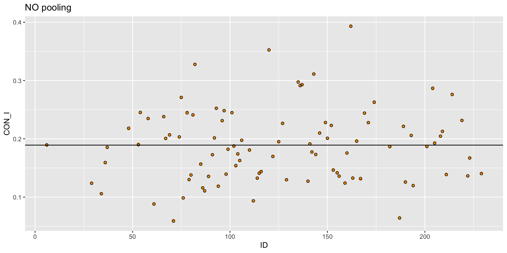
MLM will automatically create the best fitting model – balancing between over and under fitting. It identifies the value of sigma of the random effect that is ideal.
This “knob” can be manually turned to different values and we can look at the fit of the model via LOO or WAIC. But we don’t need to!
\[\text{y}_{ij} \sim \operatorname{Normal}(\mu_{ij}, \sigma)\] \[\mu_{ij} = \beta_{0[i]} + \beta_{1}Time_{ij}\]
\[\beta_{0[i]} \sim \operatorname{Normal}({\bar \mu}, \sigma_0)\] \[{\bar \mu} \sim {\operatorname{Normal}(0, 1.5)}\] \[\sigma_0 \sim {\operatorname{Half-Normal}(0, 1.5)}\] \[\beta_{1} \sim {\operatorname{Normal}(0, 1.5)}\] \[\sigma \sim {\operatorname{Exponential}(1)}\]
Notice that the slope has no hyperprior (no [i], no \(\sigma_1\)). What does that mean? It is not random: everyone gets the same slope. People could still differ in their slopes if we added predictors of the slope (cross-level interactions), but there is no U to represent leftover random variation. To get that we need a parameter for it, and we don’t have one yet.
mlm.3mlm.3 <-
brm(family = gaussian,
CON ~ 1 + time + (1 | ID),
prior = c(prior(normal(0, 1.5), class = Intercept),
prior(normal(0, 1.5), class = b),
prior(normal(0, 1.5), class = sd),
prior(exponential(1), class = sigma)),
iter = 4000, warmup = 1000, chains = 4, cores = 4,
sample_prior = "yes",
file = "mlm.3",
backend = "cmdstanr",
data = mlm)mlm.3 summary Family: gaussian
Links: mu = identity; sigma = identity
Formula: CON ~ 1 + time + (1 | ID)
Data: mlm (Number of observations: 225)
Draws: 4 chains, each with iter = 4000; warmup = 1000; thin = 1;
total post-warmup draws = 12000
Multilevel Hyperparameters:
~ID (Number of levels: 91)
Estimate Est.Error l-95% CI u-95% CI Rhat Bulk_ESS Tail_ESS
sd(Intercept) 0.06 0.01 0.05 0.07 1.00 4193 7476
Regression Coefficients:
Estimate Est.Error l-95% CI u-95% CI Rhat Bulk_ESS Tail_ESS
Intercept 0.19 0.01 0.18 0.21 1.00 6994 8994
time -0.00 0.00 -0.01 0.00 1.00 14742 9789
Further Distributional Parameters:
Estimate Est.Error l-95% CI u-95% CI Rhat Bulk_ESS Tail_ESS
sigma 0.05 0.00 0.04 0.05 1.00 8013 9414
Draws were sampled using sample(hmc). For each parameter, Bulk_ESS
and Tail_ESS are effective sample size measures, and Rhat is the potential
scale reduction factor on split chains (at convergence, Rhat = 1).posterior_summary() Estimate Est.Error Q2.5 Q97.5
b_Intercept 1.940041e-01 0.007826677 1.786149e-01 0.209344725
b_time -2.643092e-03 0.002177587 -6.925225e-03 0.001649079
sd_ID__Intercept 5.649883e-02 0.005517628 4.631454e-02 0.067848202
sigma 4.734761e-02 0.002936514 4.202114e-02 0.053612102
Intercept 1.892113e-01 0.006815445 1.758717e-01 0.202529600
r_ID[6,Intercept] 6.894050e-03 0.025632477 -4.255819e-02 0.057214167
r_ID[29,Intercept] -4.317045e-02 0.029410532 -1.006675e-01 0.014857105
r_ID[34,Intercept] -5.496105e-02 0.029746469 -1.128902e-01 0.004024982
r_ID[36,Intercept] -2.075095e-02 0.029930676 -7.989738e-02 0.037928447
r_ID[37,Intercept] 2.959034e-03 0.025584463 -4.766372e-02 0.053536242
r_ID[48,Intercept] 2.934054e-02 0.025564624 -2.058067e-02 0.079359287
r_ID[53,Intercept] 5.540256e-03 0.029425227 -5.144062e-02 0.062757537
r_ID[54,Intercept] 4.985518e-02 0.025833256 -6.674044e-04 0.100699050
r_ID[58,Intercept] 3.808043e-02 0.025174264 -1.137551e-02 0.088185725
r_ID[61,Intercept] -6.931222e-02 0.030108863 -1.272552e-01 -0.009055818
r_ID[66,Intercept] 4.185027e-02 0.026067018 -9.074979e-03 0.092666637
r_ID[67,Intercept] 1.223557e-02 0.022633214 -3.214001e-02 0.056104997
r_ID[69,Intercept] 1.226932e-02 0.029667775 -4.596177e-02 0.071293052
r_ID[71,Intercept] -1.049470e-01 0.025777505 -1.555616e-01 -0.053859977
r_ID[74,Intercept] 1.413066e-02 0.025052025 -3.610169e-02 0.063177775
r_ID[75,Intercept] 5.966435e-02 0.029682943 9.122672e-04 0.117949300
r_ID[76,Intercept] -7.273943e-02 0.025845048 -1.237458e-01 -0.021956278
r_ID[78,Intercept] 4.721165e-02 0.025409451 -2.031112e-03 0.096977370
r_ID[79,Intercept] -4.323185e-02 0.028792257 -9.884914e-02 0.012840262
r_ID[80,Intercept] -3.360304e-02 0.029631554 -9.249670e-02 0.024892937
r_ID[81,Intercept] 4.425246e-02 0.025313321 -5.117839e-03 0.093899587
r_ID[82,Intercept] 1.194751e-01 0.023401803 7.375427e-02 0.165049050
r_ID[85,Intercept] -2.656583e-02 0.029255811 -8.330911e-02 0.031289555
r_ID[86,Intercept] -5.658335e-02 0.029450409 -1.140732e-01 0.001370705
r_ID[87,Intercept] -5.910435e-02 0.029014664 -1.155641e-01 -0.002082889
r_ID[89,Intercept] -4.504349e-02 0.025147000 -9.468816e-02 0.004342086
r_ID[91,Intercept] -1.497194e-02 0.025330625 -6.443315e-02 0.034996730
r_ID[92,Intercept] 9.446729e-03 0.025267257 -4.043862e-02 0.058558775
r_ID[93,Intercept] 5.056990e-02 0.024888297 1.763072e-03 0.099418635
r_ID[94,Intercept] -5.880935e-02 0.025335247 -1.084745e-01 -0.008453616
r_ID[96,Intercept] 2.833736e-02 0.029139238 -2.908832e-02 0.084802120
r_ID[97,Intercept] 4.918658e-02 0.022604557 4.755043e-03 0.093747605
r_ID[98,Intercept] -4.283807e-02 0.022794542 -8.700858e-02 0.001808808
r_ID[99,Intercept] -6.916184e-03 0.022416641 -5.110949e-02 0.036865817
r_ID[101,Intercept] 4.376512e-02 0.025457997 -5.879864e-03 0.093417747
r_ID[102,Intercept] -2.004694e-03 0.022524556 -4.581805e-02 0.042389705
r_ID[103,Intercept] -2.816223e-02 0.028814760 -8.433012e-02 0.028689640
r_ID[104,Intercept] -1.368979e-02 0.028809435 -7.062960e-02 0.043247127
r_ID[105,Intercept] -2.319347e-02 0.025247822 -7.279866e-02 0.026286165
r_ID[106,Intercept] 5.606195e-03 0.025438938 -4.396306e-02 0.055691857
r_ID[110,Intercept] -6.040176e-03 0.025358673 -5.521733e-02 0.043524717
r_ID[112,Intercept] -7.817622e-02 0.025361370 -1.279663e-01 -0.028702283
r_ID[114,Intercept] -4.693322e-02 0.025277165 -9.660709e-02 0.002394822
r_ID[115,Intercept] -3.974349e-02 0.025565576 -8.929331e-02 0.009810768
r_ID[116,Intercept] -3.748329e-02 0.025295803 -8.713662e-02 0.011935252
r_ID[120,Intercept] 1.178859e-01 0.030366258 5.807562e-02 0.177008050
r_ID[122,Intercept] -1.668675e-02 0.024795466 -6.497346e-02 0.032179132
r_ID[125,Intercept] 3.978368e-03 0.024992491 -4.482118e-02 0.052190010
r_ID[127,Intercept] 2.903281e-02 0.025264905 -2.036774e-02 0.077879025
r_ID[129,Intercept] -4.621880e-02 0.029096849 -1.037195e-01 0.009960738
r_ID[135,Intercept] 8.624209e-02 0.025337232 3.609033e-02 0.135507875
r_ID[136,Intercept] 8.118360e-02 0.025158128 3.068991e-02 0.129971475
r_ID[137,Intercept] 7.377812e-02 0.029745954 1.539976e-02 0.131394075
r_ID[140,Intercept] -4.836868e-02 0.029448928 -1.060563e-01 0.009671810
r_ID[141,Intercept] 7.081259e-04 0.028982459 -5.557317e-02 0.057309203
r_ID[142,Intercept] -9.197605e-03 0.028776163 -6.584851e-02 0.047713220
r_ID[143,Intercept] 8.718954e-02 0.029738077 2.829227e-02 0.145901050
r_ID[144,Intercept] -1.220954e-02 0.028913189 -6.807766e-02 0.044226482
r_ID[146,Intercept] 1.452549e-02 0.029340069 -4.306062e-02 0.072288810
r_ID[149,Intercept] 2.789416e-02 0.029548885 -2.993960e-02 0.086790057
r_ID[150,Intercept] 8.209031e-03 0.028979915 -4.894788e-02 0.064855690
r_ID[152,Intercept] 2.224967e-02 0.029026980 -3.572727e-02 0.078511828
r_ID[153,Intercept] -3.240322e-02 0.029044160 -8.925863e-02 0.025473330
r_ID[155,Intercept] -3.428796e-02 0.029553408 -9.179035e-02 0.023144420
r_ID[156,Intercept] -4.425998e-02 0.024909364 -9.350289e-02 0.004300518
r_ID[159,Intercept] -5.022962e-02 0.029914616 -1.086059e-01 0.007938532
r_ID[160,Intercept] -1.053689e-02 0.029425129 -6.821577e-02 0.046206875
r_ID[162,Intercept] 1.633533e-01 0.026615499 1.104919e-01 0.215538275
r_ID[163,Intercept] -4.218590e-02 0.029002173 -9.878897e-02 0.015978262
r_ID[165,Intercept] 4.464695e-03 0.028710853 -5.227673e-02 0.059943440
r_ID[167,Intercept] -4.256251e-02 0.029661510 -1.005330e-01 0.015600112
r_ID[169,Intercept] 4.005395e-02 0.029386135 -1.658346e-02 0.097936420
r_ID[171,Intercept] 2.740331e-02 0.029132664 -2.948522e-02 0.084146590
r_ID[174,Intercept] 5.369041e-02 0.029363824 -4.309101e-03 0.110783450
r_ID[182,Intercept] -2.412529e-03 0.029420442 -6.034366e-02 0.055670132
r_ID[187,Intercept] -9.270728e-02 0.029389481 -1.513802e-01 -0.034574595
r_ID[189,Intercept] 2.329137e-02 0.029069868 -3.304641e-02 0.080815000
r_ID[190,Intercept] -4.737861e-02 0.029224274 -1.041065e-01 0.009797084
r_ID[193,Intercept] 1.154276e-02 0.029087872 -4.545133e-02 0.069312787
r_ID[194,Intercept] -5.155683e-02 0.029290674 -1.088242e-01 0.005207231
r_ID[201,Intercept] -2.345341e-03 0.028840586 -5.877458e-02 0.053656342
r_ID[204,Intercept] 7.145442e-02 0.029672124 1.284461e-02 0.129062150
r_ID[205,Intercept] 1.879642e-03 0.029138166 -5.530964e-02 0.059004535
r_ID[208,Intercept] 1.079179e-02 0.029439729 -4.773465e-02 0.068717263
r_ID[209,Intercept] 1.712446e-02 0.029112747 -3.961543e-02 0.073931125
r_ID[211,Intercept] -3.787819e-02 0.029070519 -9.520957e-02 0.019128560
r_ID[214,Intercept] 6.327564e-02 0.029131964 5.922527e-03 0.119764975
r_ID[219,Intercept] 3.069459e-02 0.028886861 -2.591263e-02 0.086664698
r_ID[222,Intercept] -3.944546e-02 0.029764179 -9.821513e-02 0.019382500
r_ID[223,Intercept] -1.704181e-02 0.028784857 -7.360138e-02 0.038043408
r_ID[229,Intercept] -3.656546e-02 0.029541925 -9.487947e-02 0.021016485
prior_Intercept -6.942279e-03 1.503652694 -2.963533e+00 2.891599750
prior_b 1.858277e-03 1.502695245 -2.961395e+00 2.909511000
prior_sigma 1.009368e+00 1.010400540 2.450734e-02 3.710285250
prior_sd_ID 1.198032e+00 0.902823225 5.271736e-02 3.347677500
lprior -3.336096e+00 0.002974311 -3.342360e+00 -3.330669750
lp__ 2.300110e+02 11.128664937 2.065509e+02 250.263325000 [1] "b_Intercept" "b_time" "sd_ID__Intercept"
[4] "sigma" "Intercept" "r_ID[6,Intercept]"
[7] "r_ID[29,Intercept]" "r_ID[34,Intercept]" "r_ID[36,Intercept]"
[10] "r_ID[37,Intercept]" "r_ID[48,Intercept]" "r_ID[53,Intercept]"
[13] "r_ID[54,Intercept]" "r_ID[58,Intercept]" "r_ID[61,Intercept]"
[16] "r_ID[66,Intercept]" "r_ID[67,Intercept]" "r_ID[69,Intercept]"
[19] "r_ID[71,Intercept]" "r_ID[74,Intercept]" "r_ID[75,Intercept]"
[22] "r_ID[76,Intercept]" "r_ID[78,Intercept]" "r_ID[79,Intercept]"
[25] "r_ID[80,Intercept]" "r_ID[81,Intercept]" "r_ID[82,Intercept]"
[28] "r_ID[85,Intercept]" "r_ID[86,Intercept]" "r_ID[87,Intercept]"
[31] "r_ID[89,Intercept]" "r_ID[91,Intercept]" "r_ID[92,Intercept]"
[34] "r_ID[93,Intercept]" "r_ID[94,Intercept]" "r_ID[96,Intercept]"
[37] "r_ID[97,Intercept]" "r_ID[98,Intercept]" "r_ID[99,Intercept]"
[40] "r_ID[101,Intercept]" "r_ID[102,Intercept]" "r_ID[103,Intercept]"
[43] "r_ID[104,Intercept]" "r_ID[105,Intercept]" "r_ID[106,Intercept]"
[46] "r_ID[110,Intercept]" "r_ID[112,Intercept]" "r_ID[114,Intercept]"
[49] "r_ID[115,Intercept]" "r_ID[116,Intercept]" "r_ID[120,Intercept]"
[52] "r_ID[122,Intercept]" "r_ID[125,Intercept]" "r_ID[127,Intercept]"
[55] "r_ID[129,Intercept]" "r_ID[135,Intercept]" "r_ID[136,Intercept]"
[58] "r_ID[137,Intercept]" "r_ID[140,Intercept]" "r_ID[141,Intercept]"
[61] "r_ID[142,Intercept]" "r_ID[143,Intercept]" "r_ID[144,Intercept]"
[64] "r_ID[146,Intercept]" "r_ID[149,Intercept]" "r_ID[150,Intercept]"
[67] "r_ID[152,Intercept]" "r_ID[153,Intercept]" "r_ID[155,Intercept]"
[70] "r_ID[156,Intercept]" "r_ID[159,Intercept]" "r_ID[160,Intercept]"
[73] "r_ID[162,Intercept]" "r_ID[163,Intercept]" "r_ID[165,Intercept]"
[76] "r_ID[167,Intercept]" "r_ID[169,Intercept]" "r_ID[171,Intercept]"
[79] "r_ID[174,Intercept]" "r_ID[182,Intercept]" "r_ID[187,Intercept]"
[82] "r_ID[189,Intercept]" "r_ID[190,Intercept]" "r_ID[193,Intercept]"
[85] "r_ID[194,Intercept]" "r_ID[201,Intercept]" "r_ID[204,Intercept]"
[88] "r_ID[205,Intercept]" "r_ID[208,Intercept]" "r_ID[209,Intercept]"
[91] "r_ID[211,Intercept]" "r_ID[214,Intercept]" "r_ID[219,Intercept]"
[94] "r_ID[222,Intercept]" "r_ID[223,Intercept]" "r_ID[229,Intercept]"
[97] "prior_Intercept" "prior_b" "prior_sigma"
[100] "prior_sd_ID" "lprior" "lp__"
[103] "accept_stat__" "treedepth__" "stepsize__"
[106] "divergent__" "n_leapfrog__" "energy__" | What you want | brms / marginaleffects | Uncertainty from |
|---|---|---|
| The average person | re_formula = NA |
the fixed effects only |
| A person in the data | re_formula = NULL (the default) |
fixed effects + that person’s estimated U |
| A new, unseen person | allow_new_levels = TRUE, sample_new_levels = "gaussian" |
fixed effects + a U drawn from Normal(0, \(\sigma_0\)) |
CON at time = 3 for person 6 (in the data) and for someone we’ve never seen:
predictions(mlm.3, newdata = tibble(ID = c(6, 9999), time = 3),
allow_new_levels = TRUE, sample_new_levels = "gaussian")
Estimate 2.5 % 97.5 % ID time
0.193 0.1452 0.241 6 3
0.187 0.0731 0.302 9999 3
Type: response
Columns: rowid, estimate, conf.low, conf.high, ID, time, CON
Estimate 2.5 % 97.5 % time
0.186 0.172 0.2 3
Type: response
Columns: rowid, estimate, conf.low, conf.high, time, CON